Contents
Tests the IKWZ_VF_VECSV Algorithm with varyin it_w_n
For benchmark simulation it_w_n = it_ak_n = 50 Time first it_param_set = 3, then show show results
close all ar_it_w_n = [250, 750, 1250]; % ar_it_w_n = [25, 50]; for it_w_n = ar_it_w_n
Simulate with current ar_it_w
disp('xxxxxxxxxxxxxxxxxxxxxxxxxxx'); disp('xxxxxxxxxxxxxxxxxxxxxxxxxxx'); disp(['it_w_n = ' num2str(it_w_n)]); disp('xxxxxxxxxxxxxxxxxxxxxxxxxxx'); disp('xxxxxxxxxxxxxxxxxxxxxxxxxxx'); disp(''); disp(''); disp(''); disp(''); it_param_set = 4; [param_map, support_map] = ffs_akz_set_default_param(it_param_set); % Simulation Accuracy param_map('it_w_n') = it_w_n; param_map('it_ak_n') = param_map('it_w_n'); param_map('it_z_n') = 11; param_map('fl_coh_interp_grid_gap') = 0.0125; param_map('it_c_interp_grid_gap') = 10^-4; % Display Parameters support_map('bl_display') = false; support_map('bl_display_final') = false; support_map('bl_time') = true; support_map('bl_profile') = false; % Call Program ff_iwkz_vf_vecsv(param_map, support_map);
xxxxxxxxxxxxxxxxxxxxxxxxxxx xxxxxxxxxxxxxxxxxxxxxxxxxxx it_w_n = 250 xxxxxxxxxxxxxxxxxxxxxxxxxxx xxxxxxxxxxxxxxxxxxxxxxxxxxx Elapsed time is 5.031024 seconds. Warning: Directory already exists.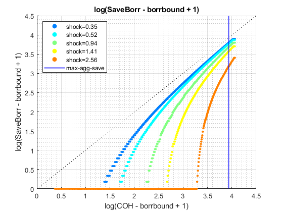 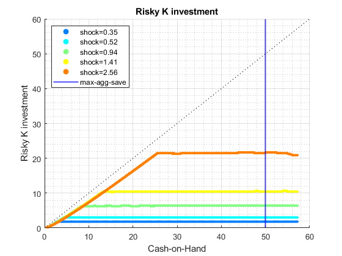 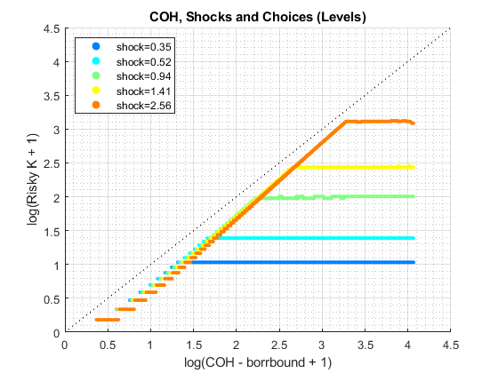 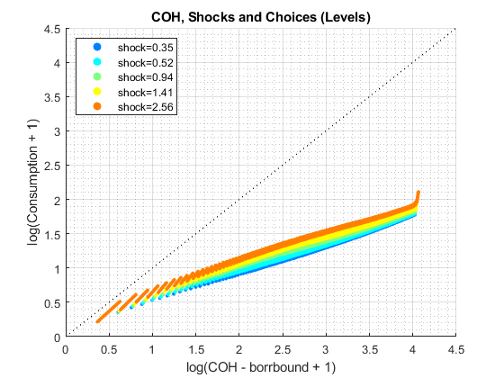 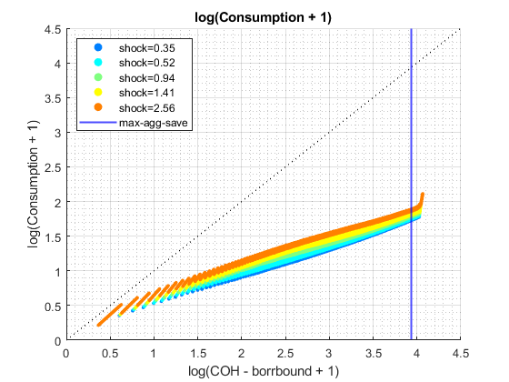 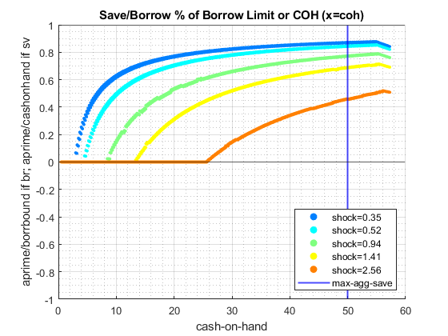 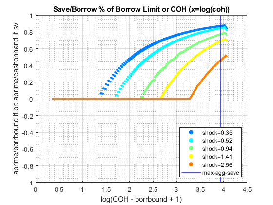
xxxxxxxxxxxxxxxxxxxxxxxxxxx xxxxxxxxxxxxxxxxxxxxxxxxxxx it_w_n = 750 xxxxxxxxxxxxxxxxxxxxxxxxxxx xxxxxxxxxxxxxxxxxxxxxxxxxxx Elapsed time is 23.071225 seconds. Warning: Directory already exists.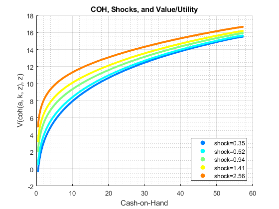 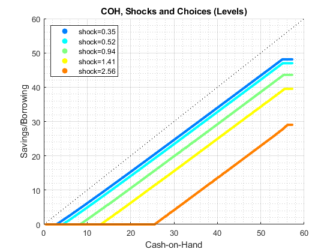 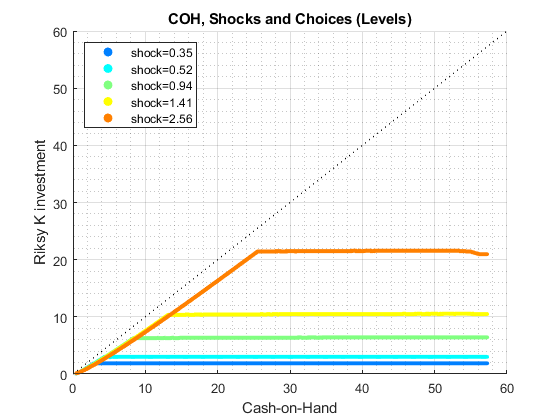 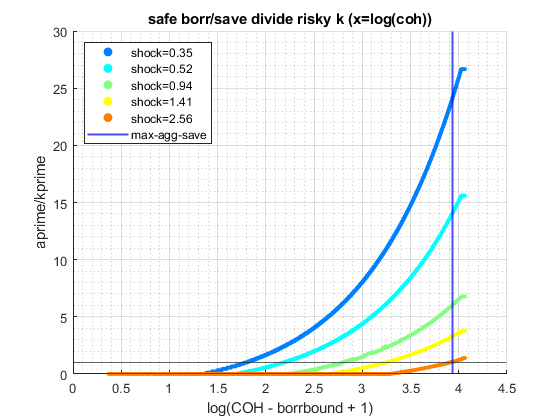 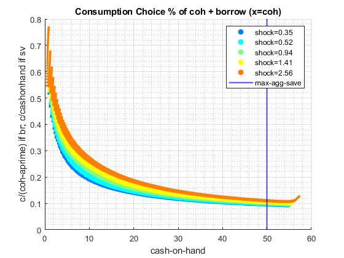 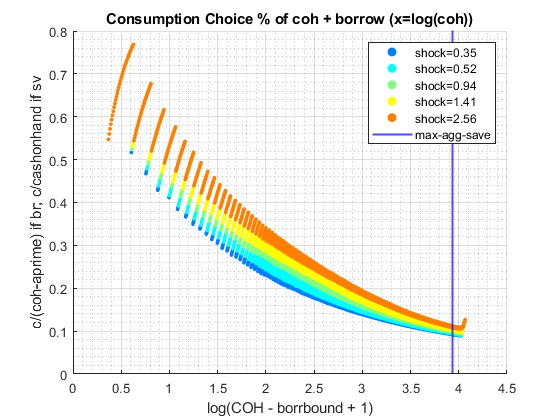 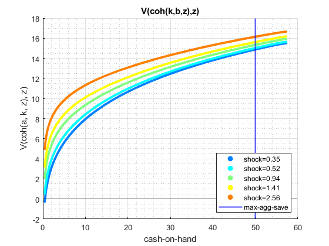 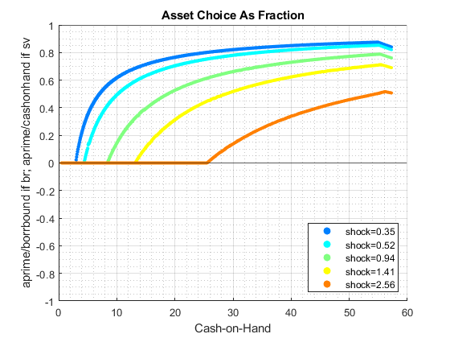 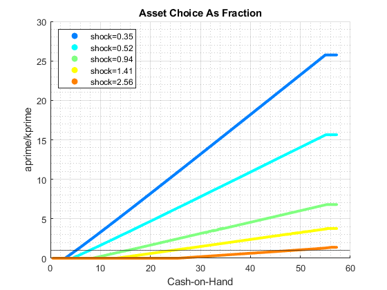 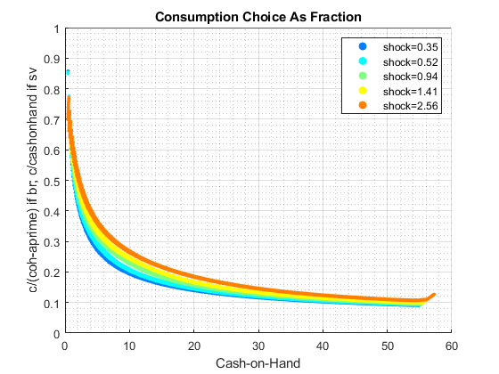
xxxxxxxxxxxxxxxxxxxxxxxxxxx xxxxxxxxxxxxxxxxxxxxxxxxxxx it_w_n = 1250 xxxxxxxxxxxxxxxxxxxxxxxxxxx xxxxxxxxxxxxxxxxxxxxxxxxxxx Elapsed time is 38.283646 seconds. Warning: Directory already exists.
 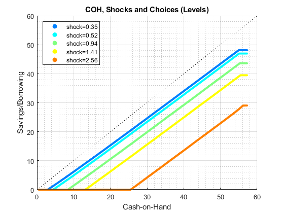 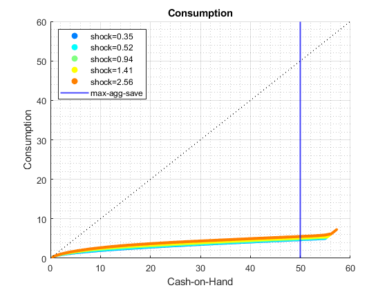
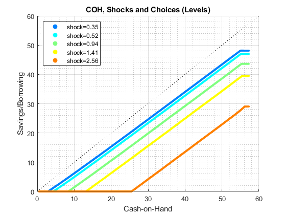 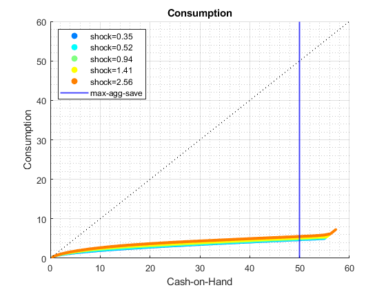  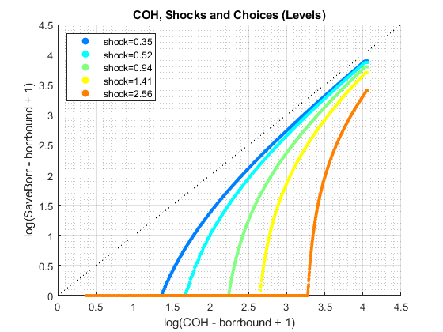 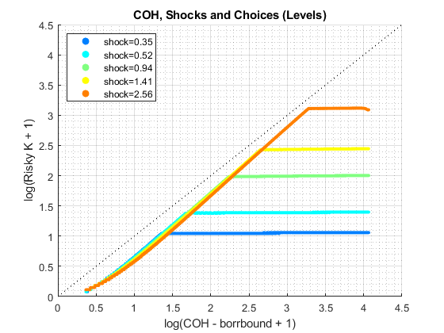 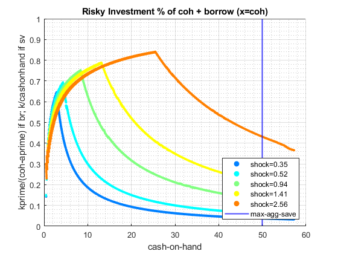 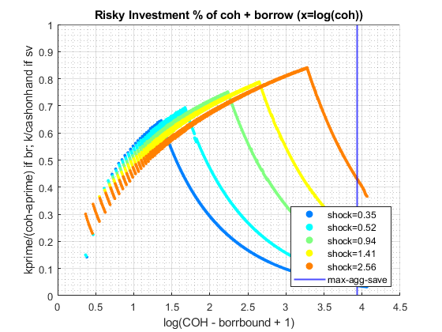 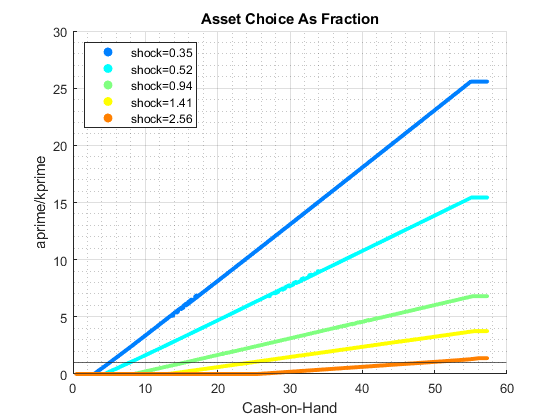 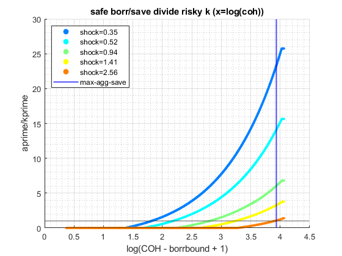
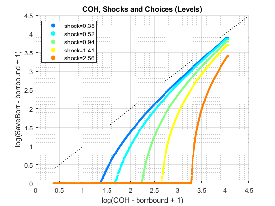 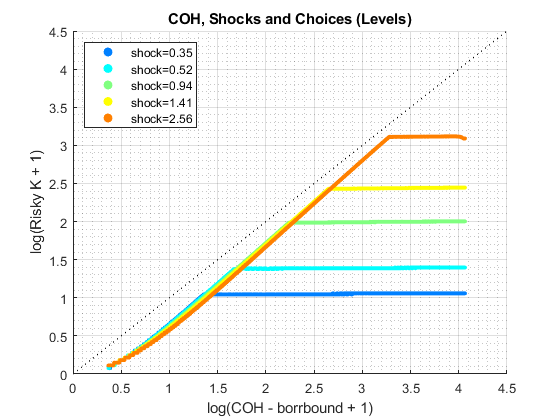 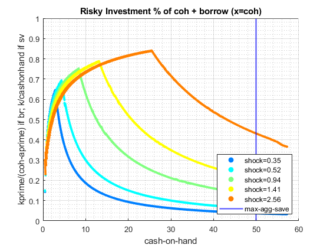 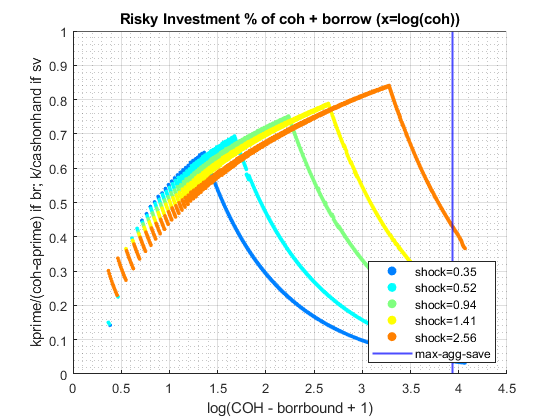 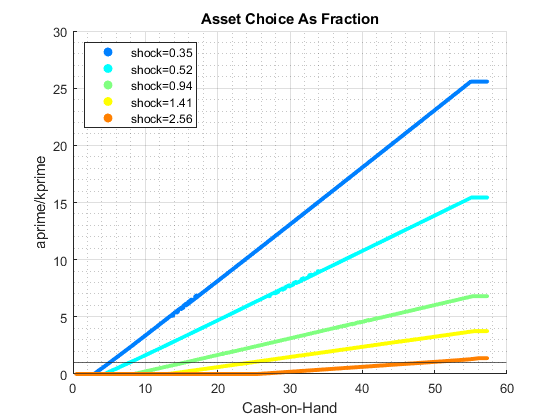 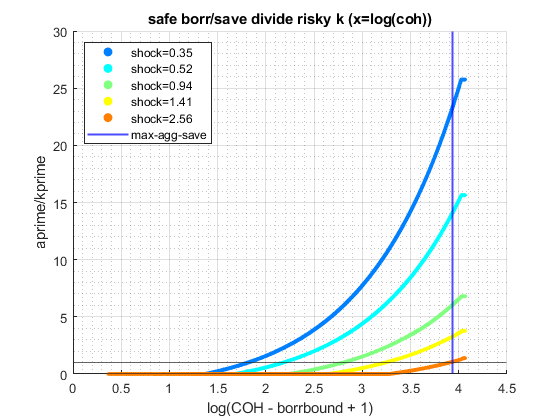 end